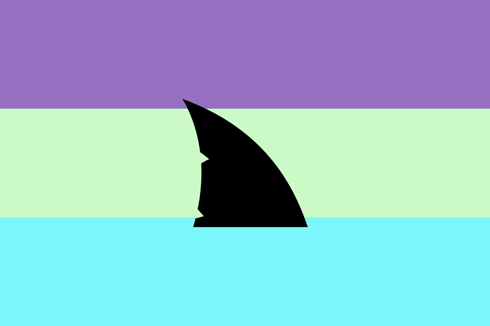

Official Tourism Portal
Welcome to Shæwraka, Land of the Sharks.
Discover
From the agricultural heartlands of Sænda to the remote wilderness of Chæfsh, each province carries its own character, history, and people.
Home to the federal government and the Prykhodko family's ancient wardenship, Sønshuənia sits where the Black Sea meets shæwraka's political heart.
The most populous province, home to over 109 million people. Known for the popular riverside retreat of Rikæsh.
Shæwraka's industrial heartland, centred on the Jiænīv peninsula and its manufacturing centres.
The gateway for imported goods into Shæwraka, Ræk leads the republic in trade volume and international commerce.
The country province. Agriculture, open land, and a deeply traditional Sharkin population spread across the province's wide rural expanses.
The seat of Shæwraka's military. Most national defence training and stationed forced are based here.
Shæwraka's most distant province, shaped by centuries of Italian culture and Maltese-Australian immigration.
Vast, mountainous, and sparsely populated. Chæfsh's harsh terrain makes it one of the most remote places in the republic.
A small island off the eastern coast of Spain. Ún is the smallest and only territory of the republic.
Culture
Shæwrakin is the national language of Shæwraka, spoken across all provinces and territories. Its written form uses a distictive set of characters, reflecting the country's unique cultural heritage.
Shæwrakin features three grammatical cases, a sacred animacy class reserved for sharks and distinct formal & everyday registers used across public and private life.
Explore the language